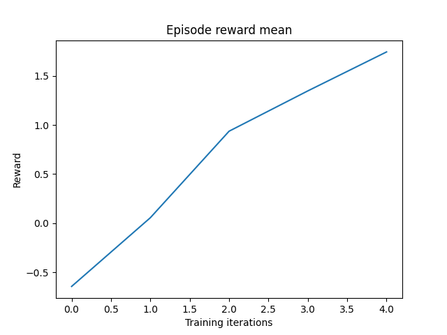

Note
Go to the end to download the full example code.
Multi-Agent Reinforcement Learning (PPO) with TorchRL Tutorial#
Author: Matteo Bettini
See also
The BenchMARL library provides state-of-the-art implementations of MARL algorithms using TorchRL.
This tutorial demonstrates how to use PyTorch and torchrl to
solve a Multi-Agent Reinforcement Learning (MARL) problem.
For ease of use, this tutorial will follow the general structure of the already available in: Reinforcement Learning (PPO) with TorchRL Tutorial. It is suggested but not mandatory to get familiar with that prior to starting this tutorial.
In this tutorial, we will use the Navigation environment from VMAS, a multi-robot simulator, also based on PyTorch, that runs parallel batched simulation on device.
In the Navigation environment, we need to train multiple robots (spawned at random positions) to navigate to their goals (also at random positions), while using LIDAR sensors to avoid collisions among each other.

Multi-agent Navigation scenario#
Key learnings:
How to create a multi-agent environment in TorchRL, how its specs work, and how it integrates with the library;
How you use GPU vectorized environments in TorchRL;
How to create different multi-agent network architectures in TorchRL (e.g., using parameter sharing, centralised critic)
How we can use
tensordict.TensorDictto carry multi-agent data;How we can tie all the library components (collectors, modules, replay buffers, and losses) in a multi-agent MAPPO/IPPO training loop.
If you are running this in Google Colab, make sure you install the following dependencies:
!pip3 install torchrl
!pip3 install vmas
!pip3 install tqdm
Proximal Policy Optimization (PPO) is a policy-gradient algorithm where a batch of data is being collected and directly consumed to train the policy to maximise the expected return given some proximality constraints. You can think of it as a sophisticated version of REINFORCE, the foundational policy-optimization algorithm. For more information, see the Proximal Policy Optimization Algorithms paper.
This type of algorithms is usually trained on-policy. This means that, at every learning iteration, we have a sampling and a training phase. In the sampling phase of iteration \(t\), rollouts are collected from agents’ interactions in the environment using the current policies \(\mathbf{\pi}_t\). In the training phase, all the collected rollouts are immediately fed to the training process to perform backpropagation. This leads to updated policies which are then used again for sampling. The execution of this process in a loop constitutes on-policy learning.

On-policy learning#
In the training phase of the PPO algorithm, a critic is used to estimate the goodness of the actions taken by the policy. The critic learns to approximate the value (mean discounted return) of a specific state. The PPO loss then compares the actual return obtained by the policy to the one estimated by the critic to determine the advantage of the action taken and guide the policy optimization.
In multi-agent settings, things are a bit different. We now have multiple policies \(\mathbf{\pi}\), one for each agent. Policies are typically local and decentralised. This means that the policy for a single agent will output an action for that agent based only on its observation. In the MARL literature, this is referred to as decentralised execution. On the other hand, different formulations exist for the critic, mainly:
In MAPPO the critic is centralised and takes as input the global state of the system. This can be a global observation or simply the concatenation of the agents’ observation. MAPPO can be used in contexts where centralised training is performed as it needs access to global information.
In IPPO the critic takes as input just the observation of the respective agent, exactly like the policy. This allows decentralised training as both the critic and the policy will only need local information to compute their outputs.
Centralised critics help overcome the non-stationary of multiple agents learning concurrently, but, on the other hand, they may be impacted by their large input space. In this tutorial, we will be able to train both formulations, and we will also discuss how parameter-sharing (the practice of sharing the network parameters across the agents) impacts each.
This tutorial is structured as follows:
First, we will define a set of hyperparameters we will be using.
Next, we will create a vectorized multi-agent environment, using TorchRL’s wrapper for the VMAS simulator.
Next, we will design the policy and the critic networks, discussing the impact of the various choices on parameter sharing and critic centralization.
Next, we will create the sampling collector and the replay buffer.
Finally, we will run our training loop and analyse the results.
If you are running this in Colab or in a machine with a GUI, you will also have the option to render and visualise your own trained policy prior and after training.
Let’s import our dependencies
# Torch
import torch
# Tensordict modules
from tensordict.nn import set_composite_lp_aggregate, TensorDictModule
from tensordict.nn.distributions import NormalParamExtractor
from torch import multiprocessing
# Data collection
from torchrl.collectors import Collector
from torchrl.data.replay_buffers import ReplayBuffer
from torchrl.data.replay_buffers.samplers import SamplerWithoutReplacement
from torchrl.data.replay_buffers.storages import LazyTensorStorage
# Env
from torchrl.envs import RewardSum, TransformedEnv
from torchrl.envs.libs.vmas import VmasEnv
from torchrl.envs.utils import check_env_specs
# Multi-agent network
from torchrl.modules import MultiAgentMLP, ProbabilisticActor, TanhNormal
# Loss
from torchrl.objectives import ClipPPOLoss, ValueEstimators
# Utils
torch.manual_seed(0)
from matplotlib import pyplot as plt
from tqdm import tqdm
Define Hyperparameters#
We set the hyperparameters for our tutorial. Depending on the resources available, one may choose to execute the policy and the simulator on GPU or on another device. You can tune some of these values to adjust the computational requirements.
# Devices
is_fork = multiprocessing.get_start_method() == "fork"
device = (
torch.device(0)
if torch.cuda.is_available() and not is_fork
else torch.device("cpu")
)
vmas_device = device # The device where the simulator is run (VMAS can run on GPU)
# Sampling
frames_per_batch = 6_000 # Number of team frames collected per training iteration
n_iters = 5 # Number of sampling and training iterations
total_frames = frames_per_batch * n_iters
# Training
num_epochs = 30 # Number of optimization steps per training iteration
minibatch_size = 400 # Size of the mini-batches in each optimization step
lr = 3e-4 # Learning rate
max_grad_norm = 1.0 # Maximum norm for the gradients
# PPO
clip_epsilon = 0.2 # clip value for PPO loss
gamma = 0.99 # discount factor
lmbda = 0.9 # lambda for generalised advantage estimation
entropy_eps = 1e-4 # coefficient of the entropy term in the PPO loss
# disable log-prob aggregation
set_composite_lp_aggregate(False).set()
Environment#
Multi-agent environments simulate multiple agents interacting with the world. TorchRL API allows integrating various types of multi-agent environment flavors. Some examples include environments with shared or individual agent rewards, done flags, and observations. For more information on how the multi-agent environments API works in TorchRL, you can check out the dedicated doc section.
The VMAS simulator, in particular, models agents with individual rewards, info, observations, and actions, but with a collective done flag. Furthermore, it uses vectorization to perform simulation in a batch. This means that all its state and physics are PyTorch tensors with a first dimension representing the number of parallel environments in a batch. This allows leveraging the Single Instruction Multiple Data (SIMD) paradigm of GPUs and significantly speed up parallel computation by leveraging parallelization in GPU warps. It also means that, when using it in TorchRL, both simulation and training can be run on-device, without ever passing data to the CPU.
The multi-agent task we will solve today is Navigation (see animated figure above). In Navigation, randomly spawned agents (circles with surrounding dots) need to navigate to randomly spawned goals (smaller circles). Agents need to use LIDARs (dots around them) to avoid colliding into each other. Agents act in a 2D continuous world with drag and elastic collisions. Their actions are 2D continuous forces which determine their acceleration. The reward is composed of three terms: a collision penalization, a reward based on the distance to the goal, and a final shared reward given when all agents reach their goal. The distance-based term is computed as the difference in the relative distance between an agent and its goal over two consecutive timesteps. Each agent observes its position, velocity, lidar readings, and relative position to its goal.
We will now instantiate the environment.
For this tutorial, we will limit the episodes to max_steps, after which the done flag is set. This is
functionality is already provided in the VMAS simulator but the TorchRL StepCount
transform could alternatively be used.
We will also use num_vmas_envs vectorized environments, to leverage batch simulation.
max_steps = 100 # Episode steps before done
num_vmas_envs = (
frames_per_batch // max_steps
) # Number of vectorized envs. frames_per_batch should be divisible by this number
scenario_name = "navigation"
n_agents = 3
env = VmasEnv(
scenario=scenario_name,
num_envs=num_vmas_envs,
continuous_actions=True, # VMAS supports both continuous and discrete actions
max_steps=max_steps,
device=vmas_device,
# Scenario kwargs
n_agents=n_agents, # These are custom kwargs that change for each VMAS scenario, see the VMAS repo to know more.
)
The environment is not only defined by its simulator and transforms, but also
by a series of metadata that describe what can be expected during its
execution.
For efficiency purposes, TorchRL is quite stringent when it comes to
environment specs, but you can easily check that your environment specs are
adequate.
In our example, the VmasEnv takes care of setting the proper specs for your env so
you should not have to care about this.
There are four specs to look at:
action_specdefines the action space;reward_specdefines the reward domain;done_specdefines the done domain;observation_specwhich defines the domain of all other outputs from environment steps;
print("action_spec:", env.full_action_spec)
print("reward_spec:", env.full_reward_spec)
print("done_spec:", env.full_done_spec)
print("observation_spec:", env.observation_spec)
action_spec: Composite(
agents: Composite(
action: BoundedContinuous(
shape=torch.Size([60, 3, 2]),
space=ContinuousBox(
low=Tensor(shape=torch.Size([60, 3, 2]), device=cpu, dtype=torch.float32, contiguous=True),
high=Tensor(shape=torch.Size([60, 3, 2]), device=cpu, dtype=torch.float32, contiguous=True)),
device=cpu,
dtype=torch.float32,
domain=continuous),
device=cpu,
shape=torch.Size([60, 3]),
data_cls=None),
device=cpu,
shape=torch.Size([60]),
data_cls=None)
reward_spec: Composite(
agents: Composite(
reward: UnboundedContinuous(
shape=torch.Size([60, 3, 1]),
space=ContinuousBox(
low=Tensor(shape=torch.Size([60, 3, 1]), device=cpu, dtype=torch.float32, contiguous=True),
high=Tensor(shape=torch.Size([60, 3, 1]), device=cpu, dtype=torch.float32, contiguous=True)),
device=cpu,
dtype=torch.float32,
domain=continuous),
device=cpu,
shape=torch.Size([60, 3]),
data_cls=None),
device=cpu,
shape=torch.Size([60]),
data_cls=None)
done_spec: Composite(
done: Categorical(
shape=torch.Size([60, 1]),
space=CategoricalBox(n=2),
device=cpu,
dtype=torch.bool,
domain=discrete),
terminated: Categorical(
shape=torch.Size([60, 1]),
space=CategoricalBox(n=2),
device=cpu,
dtype=torch.bool,
domain=discrete),
device=cpu,
shape=torch.Size([60]),
data_cls=None)
observation_spec: Composite(
agents: Composite(
observation: UnboundedContinuous(
shape=torch.Size([60, 3, 18]),
space=ContinuousBox(
low=Tensor(shape=torch.Size([60, 3, 18]), device=cpu, dtype=torch.float32, contiguous=True),
high=Tensor(shape=torch.Size([60, 3, 18]), device=cpu, dtype=torch.float32, contiguous=True)),
device=cpu,
dtype=torch.float32,
domain=continuous),
info: Composite(
pos_rew: UnboundedContinuous(
shape=torch.Size([60, 3, 1]),
space=ContinuousBox(
low=Tensor(shape=torch.Size([60, 3, 1]), device=cpu, dtype=torch.float32, contiguous=True),
high=Tensor(shape=torch.Size([60, 3, 1]), device=cpu, dtype=torch.float32, contiguous=True)),
device=cpu,
dtype=torch.float32,
domain=continuous),
final_rew: UnboundedContinuous(
shape=torch.Size([60, 3, 1]),
space=ContinuousBox(
low=Tensor(shape=torch.Size([60, 3, 1]), device=cpu, dtype=torch.float32, contiguous=True),
high=Tensor(shape=torch.Size([60, 3, 1]), device=cpu, dtype=torch.float32, contiguous=True)),
device=cpu,
dtype=torch.float32,
domain=continuous),
agent_collisions: UnboundedContinuous(
shape=torch.Size([60, 3, 1]),
space=ContinuousBox(
low=Tensor(shape=torch.Size([60, 3, 1]), device=cpu, dtype=torch.float32, contiguous=True),
high=Tensor(shape=torch.Size([60, 3, 1]), device=cpu, dtype=torch.float32, contiguous=True)),
device=cpu,
dtype=torch.float32,
domain=continuous),
device=cpu,
shape=torch.Size([60, 3]),
data_cls=None),
device=cpu,
shape=torch.Size([60, 3]),
data_cls=None),
device=cpu,
shape=torch.Size([60]),
data_cls=None)
Using the commands just shown we can access the domain of each value.
Doing this we can see that all specs apart from done have a leading shape (num_vmas_envs, n_agents).
This represents the fact that those values will be present for each agent in each individual environment.
The done spec, on the other hand, has leading shape num_vmas_envs, representing that done is shared among
agents.
TorchRL has a way to keep track of which MARL specs are shared and which are not. In fact, specs that have the additional agent dimension (i.e., they vary for each agent) will be contained in a inner “agents” key.
As you can see the reward and action spec present the “agent” key, meaning that entries in tensordicts belonging to those specs will be nested in an “agents” tensordict, grouping all per-agent values.
To quickly access the keys for each of these values in tensordicts, we can simply ask the environment for the respective keys, and we will immediately understand which are per-agent and which shared. This info will be useful in order to tell all other TorchRL components where to find each value
print("action_keys:", env.action_keys)
print("reward_keys:", env.reward_keys)
print("done_keys:", env.done_keys)
action_keys: [('agents', 'action')]
reward_keys: [('agents', 'reward')]
done_keys: ['done', 'terminated']
Transforms#
We can append any TorchRL transform we need to our environment. These will modify its input/output in some desired way. We stress that, in multi-agent contexts, it is paramount to provide explicitly the keys to modify.
For example, in this case, we will instantiate a RewardSum transform which will sum rewards over the episode.
We will tell this transform where to find the reward key and where to write the summed episode reward.
The transformed environment will inherit
the device and meta-data of the wrapped environment, and transform these depending on the sequence
of transforms it contains.
env = TransformedEnv(
env,
RewardSum(in_keys=[env.reward_key], out_keys=[("agents", "episode_reward")]),
)
the check_env_specs() function runs a small rollout and compares its output against the environment
specs. If no error is raised, we can be confident that the specs are properly defined:
check_env_specs(env)
Rollout#
For fun, let’s see what a simple random rollout looks like. You can call env.rollout(n_steps) and get an overview of what the environment inputs and outputs look like. Actions will automatically be drawn at random from the action spec domain.
n_rollout_steps = 5
rollout = env.rollout(n_rollout_steps)
print("rollout of three steps:", rollout)
print("Shape of the rollout TensorDict:", rollout.batch_size)
rollout of three steps: TensorDict(
fields={
agents: TensorDict(
fields={
action: Tensor(shape=torch.Size([60, 5, 3, 2]), device=cpu, dtype=torch.float32, is_shared=False),
episode_reward: Tensor(shape=torch.Size([60, 5, 3, 1]), device=cpu, dtype=torch.float32, is_shared=False),
info: TensorDict(
fields={
agent_collisions: Tensor(shape=torch.Size([60, 5, 3, 1]), device=cpu, dtype=torch.float32, is_shared=False),
final_rew: Tensor(shape=torch.Size([60, 5, 3, 1]), device=cpu, dtype=torch.float32, is_shared=False),
pos_rew: Tensor(shape=torch.Size([60, 5, 3, 1]), device=cpu, dtype=torch.float32, is_shared=False)},
batch_size=torch.Size([60, 5, 3]),
device=cpu,
is_shared=False),
observation: Tensor(shape=torch.Size([60, 5, 3, 18]), device=cpu, dtype=torch.float32, is_shared=False)},
batch_size=torch.Size([60, 5, 3]),
device=cpu,
is_shared=False),
done: Tensor(shape=torch.Size([60, 5, 1]), device=cpu, dtype=torch.bool, is_shared=False),
next: TensorDict(
fields={
agents: TensorDict(
fields={
episode_reward: Tensor(shape=torch.Size([60, 5, 3, 1]), device=cpu, dtype=torch.float32, is_shared=False),
info: TensorDict(
fields={
agent_collisions: Tensor(shape=torch.Size([60, 5, 3, 1]), device=cpu, dtype=torch.float32, is_shared=False),
final_rew: Tensor(shape=torch.Size([60, 5, 3, 1]), device=cpu, dtype=torch.float32, is_shared=False),
pos_rew: Tensor(shape=torch.Size([60, 5, 3, 1]), device=cpu, dtype=torch.float32, is_shared=False)},
batch_size=torch.Size([60, 5, 3]),
device=cpu,
is_shared=False),
observation: Tensor(shape=torch.Size([60, 5, 3, 18]), device=cpu, dtype=torch.float32, is_shared=False),
reward: Tensor(shape=torch.Size([60, 5, 3, 1]), device=cpu, dtype=torch.float32, is_shared=False)},
batch_size=torch.Size([60, 5, 3]),
device=cpu,
is_shared=False),
done: Tensor(shape=torch.Size([60, 5, 1]), device=cpu, dtype=torch.bool, is_shared=False),
terminated: Tensor(shape=torch.Size([60, 5, 1]), device=cpu, dtype=torch.bool, is_shared=False)},
batch_size=torch.Size([60, 5]),
device=cpu,
is_shared=False),
terminated: Tensor(shape=torch.Size([60, 5, 1]), device=cpu, dtype=torch.bool, is_shared=False)},
batch_size=torch.Size([60, 5]),
device=cpu,
is_shared=False)
Shape of the rollout TensorDict: torch.Size([60, 5])
We can see that our rollout has batch_size of (num_vmas_envs, n_rollout_steps).
This means that all the tensors in it will have those leading dimensions.
Looking more in depth, we can see that the output tensordict can be divided in the following way:
In the root (accessible by running
rollout.exclude("next")) we will find all the keys that are available after a reset is called at the first timestep. We can see their evolution through the rollout steps by indexing then_rollout_stepsdimension. Among these keys, we will find the ones that are different for each agent in therollout["agents"]tensordict, which will have batch size(num_vmas_envs, n_rollout_steps, n_agents)signifying that it is storing the additional agent dimension. The ones outside this agent tensordict will be the shared ones (in this case only done).In the next (accessible by running
rollout.get("next")). We will find the same structure as the root, but for keys that are available only after a step.
In TorchRL the convention is that done and observations will be present in both root and next (as these are available both at reset time and after a step). Action will only be available in root (as there is no action resulting from a step) and reward will only be available in next (as there is no reward at reset time). This structure follows the one in Reinforcement Learning: An Introduction (Sutton and Barto) where root represents data at time \(t\) and next represents data at time \(t+1\) of a world step.
Render a random rollout#
If you are on Google Colab, or on a machine with OpenGL and a GUI, you can actually render a random rollout. This will give you an idea of what a random policy will achieve in this task, in order to compare it with the policy you will train yourself!
To render a rollout, follow the instructions in the Render section at the end of this tutorial
and just remove the line policy=policy from env.rollout() .
Policy#
PPO utilises a stochastic policy to handle exploration. This means that our neural network will have to output the parameters of a distribution, rather than a single value corresponding to the action taken.
As the data is continuous, we use a Tanh-Normal distribution to respect the action space boundaries. TorchRL provides such distribution, and the only thing we need to care about is to build a neural network that outputs the right number of parameters.
In this case, each agent’s action will be represented by a 2-dimensional independent normal distribution.
For this, our neural network will have to output a mean and a standard deviation for each action.
Each agent will thus have 2 * n_actions_per_agents outputs.
Another important decision we need to make is whether we want our agents to share the policy parameters. On the one hand, sharing parameters means that they will all share the same policy, which will allow them to benefit from each other’s experiences. This will also result in faster training. On the other hand, it will make them behaviorally homogeneous, as they will in fact share the same model. For this example, we will enable sharing as we do not mind the homogeneity and can benefit from the computational speed, but it is important to always think about this decision in your own problems!
We design the policy in three steps.
First: define a neural network n_obs_per_agent -> 2 * n_actions_per_agents
For this we use the MultiAgentMLP, a TorchRL module made exactly for
multiple agents, with much customization available.
share_parameters_policy = True
policy_net = torch.nn.Sequential(
MultiAgentMLP(
n_agent_inputs=env.observation_spec["agents", "observation"].shape[
-1
], # n_obs_per_agent
n_agent_outputs=2
* env.full_action_spec[env.action_key].shape[-1], # 2 * n_actions_per_agents
n_agents=env.n_agents,
centralised=False, # the policies are decentralised (ie each agent will act from its observation)
share_params=share_parameters_policy,
device=device,
depth=2,
num_cells=256,
activation_class=torch.nn.Tanh,
),
NormalParamExtractor(), # this will just separate the last dimension into two outputs: a loc and a non-negative scale
)
Second: wrap the neural network in a TensorDictModule
This is simply a module that will read the in_keys from a tensordict, feed them to the
neural networks, and write the
outputs in-place at the out_keys.
Note that we use ("agents", ...) keys as these keys are denoting data with the
additional n_agents dimension.
policy_module = TensorDictModule(
policy_net,
in_keys=[("agents", "observation")],
out_keys=[("agents", "loc"), ("agents", "scale")],
)
Third: wrap the TensorDictModule in a ProbabilisticActor
We now need to build a distribution out of the location and scale of our
normal distribution. To do so, we instruct the ProbabilisticActor
class to build a TanhNormal out of the location and scale
parameters. We also provide the minimum and maximum values of this
distribution, which we gather from the environment specs.
The name of the in_keys (and hence the name of the out_keys from
the TensorDictModule above) has to end with the
TanhNormal distribution constructor keyword arguments (loc and scale).
policy = ProbabilisticActor(
module=policy_module,
spec=env.action_spec_unbatched,
in_keys=[("agents", "loc"), ("agents", "scale")],
out_keys=[env.action_key],
distribution_class=TanhNormal,
distribution_kwargs={
"low": env.full_action_spec_unbatched[env.action_key].space.low,
"high": env.full_action_spec_unbatched[env.action_key].space.high,
},
return_log_prob=True,
) # we'll need the log-prob for the PPO loss
Critic network#
The critic network is a crucial component of the PPO algorithm, even though it isn’t used at sampling time. This module will read the observations and return the corresponding value estimates.
As before, one should think carefully about the decision of sharing the critic parameters. In general, parameter sharing will grant faster training convergence, but there are a few important considerations to be made:
Sharing is not recommended when agents have different reward functions, as the critics will need to learn to assign different values to the same state (e.g., in mixed cooperative-competitive settings).
In decentralised training settings, sharing cannot be performed without additional infrastructure to synchronise parameters.
In all other cases where the reward function (to be differentiated from the reward) is the same for all agents (as in the current scenario), sharing can provide improved performance. This can come at the cost of homogeneity in the agent strategies. In general, the best way to know which choice is preferable is to quickly experiment both options.
Here is also where we have to choose between MAPPO and IPPO:
With MAPPO, we will obtain a central critic with full-observability (i.e., it will take all the concatenated agent observations as input). We can do this because we are in a simulator and training is centralised.
With IPPO, we will have a local decentralised critic, just like the policy.
In any case, the critic output will have shape (..., n_agents, 1).
If the critic is centralised and shared,
all the values along the n_agents dimension will be identical.
share_parameters_critic = True
mappo = True # IPPO if False
critic_net = MultiAgentMLP(
n_agent_inputs=env.observation_spec["agents", "observation"].shape[-1],
n_agent_outputs=1, # 1 value per agent
n_agents=env.n_agents,
centralised=mappo,
share_params=share_parameters_critic,
device=device,
depth=2,
num_cells=256,
activation_class=torch.nn.Tanh,
)
critic = TensorDictModule(
module=critic_net,
in_keys=[("agents", "observation")],
out_keys=[("agents", "state_value")],
)
Let us try our policy and critic modules. As pointed earlier, the usage of
TensorDictModule makes it possible to directly read the output
of the environment to run these modules, as they know what information to read
and where to write it:
From this point on, the multi-agent-specific components have been instantiated, and we will simply use the same components as in single-agent learning. Isn’t this fantastic?
print("Running policy:", policy(env.reset()))
print("Running value:", critic(env.reset()))
Running policy: TensorDict(
fields={
agents: TensorDict(
fields={
action: Tensor(shape=torch.Size([60, 3, 2]), device=cpu, dtype=torch.float32, is_shared=False),
action_log_prob: Tensor(shape=torch.Size([60, 3]), device=cpu, dtype=torch.float32, is_shared=False),
episode_reward: Tensor(shape=torch.Size([60, 3, 1]), device=cpu, dtype=torch.float32, is_shared=False),
info: TensorDict(
fields={
agent_collisions: Tensor(shape=torch.Size([60, 3, 1]), device=cpu, dtype=torch.float32, is_shared=False),
final_rew: Tensor(shape=torch.Size([60, 3, 1]), device=cpu, dtype=torch.float32, is_shared=False),
pos_rew: Tensor(shape=torch.Size([60, 3, 1]), device=cpu, dtype=torch.float32, is_shared=False)},
batch_size=torch.Size([60, 3]),
device=cpu,
is_shared=False),
loc: Tensor(shape=torch.Size([60, 3, 2]), device=cpu, dtype=torch.float32, is_shared=False),
observation: Tensor(shape=torch.Size([60, 3, 18]), device=cpu, dtype=torch.float32, is_shared=False),
scale: Tensor(shape=torch.Size([60, 3, 2]), device=cpu, dtype=torch.float32, is_shared=False)},
batch_size=torch.Size([60, 3]),
device=cpu,
is_shared=False),
done: Tensor(shape=torch.Size([60, 1]), device=cpu, dtype=torch.bool, is_shared=False),
terminated: Tensor(shape=torch.Size([60, 1]), device=cpu, dtype=torch.bool, is_shared=False)},
batch_size=torch.Size([60]),
device=cpu,
is_shared=False)
Running value: TensorDict(
fields={
agents: TensorDict(
fields={
episode_reward: Tensor(shape=torch.Size([60, 3, 1]), device=cpu, dtype=torch.float32, is_shared=False),
info: TensorDict(
fields={
agent_collisions: Tensor(shape=torch.Size([60, 3, 1]), device=cpu, dtype=torch.float32, is_shared=False),
final_rew: Tensor(shape=torch.Size([60, 3, 1]), device=cpu, dtype=torch.float32, is_shared=False),
pos_rew: Tensor(shape=torch.Size([60, 3, 1]), device=cpu, dtype=torch.float32, is_shared=False)},
batch_size=torch.Size([60, 3]),
device=cpu,
is_shared=False),
observation: Tensor(shape=torch.Size([60, 3, 18]), device=cpu, dtype=torch.float32, is_shared=False),
state_value: Tensor(shape=torch.Size([60, 3, 1]), device=cpu, dtype=torch.float32, is_shared=False)},
batch_size=torch.Size([60, 3]),
device=cpu,
is_shared=False),
done: Tensor(shape=torch.Size([60, 1]), device=cpu, dtype=torch.bool, is_shared=False),
terminated: Tensor(shape=torch.Size([60, 1]), device=cpu, dtype=torch.bool, is_shared=False)},
batch_size=torch.Size([60]),
device=cpu,
is_shared=False)
Data collector#
TorchRL provides a set of data collector classes. Briefly, these classes execute three operations: reset an environment, compute an action using the policy and the latest observation, execute a step in the environment, and repeat the last two steps until the environment signals a stop (or reaches a done state).
We will use the simplest possible data collector, which has the same output as an environment rollout, with the only difference that it will auto reset done states until the desired frames are collected.
collector = Collector(
env,
policy,
device=vmas_device,
storing_device=device,
frames_per_batch=frames_per_batch,
total_frames=total_frames,
)
Replay buffer#
Replay buffers are a common building piece of off-policy RL algorithms. In on-policy contexts, a replay buffer is refilled every time a batch of data is collected, and its data is repeatedly consumed for a certain number of epochs.
Using a replay buffer for PPO is not mandatory and we could simply use the collected data online, but using these classes makes it easy for us to build the inner training loop in a reproducible way.
Loss function#
The PPO loss can be directly imported from TorchRL for convenience using the
ClipPPOLoss class. This is the easiest way of utilising PPO:
it hides away the mathematical operations of PPO and the control flow that
goes with it.
PPO requires some “advantage estimation” to be computed. In short, an advantage
is a value that reflects an expectancy over the return value while dealing with
the bias / variance tradeoff.
To compute the advantage, one just needs to (1) build the advantage module, which
utilises our value operator, and (2) pass each batch of data through it before each
epoch.
The GAE module will update the input TensorDict with new "advantage" and
"value_target" entries.
The "value_target" is a gradient-free tensor that represents the empirical
value that the value network should represent with the input observation.
Both of these will be used by ClipPPOLoss to
return the policy and value losses.
loss_module = ClipPPOLoss(
actor_network=policy,
critic_network=critic,
clip_epsilon=clip_epsilon,
entropy_coeff=entropy_eps,
normalize_advantage=False, # Important to avoid normalizing across the agent dimension
)
loss_module.set_keys( # We have to tell the loss where to find the keys
reward=env.reward_key,
action=env.action_key,
value=("agents", "state_value"),
# These last 2 keys will be expanded to match the reward shape
done=("agents", "done"),
terminated=("agents", "terminated"),
)
loss_module.make_value_estimator(
ValueEstimators.GAE, gamma=gamma, lmbda=lmbda
) # We build GAE
GAE = loss_module.value_estimator
optim = torch.optim.Adam(loss_module.parameters(), lr)
Training loop#
We now have all the pieces needed to code our training loop. The steps include:
- Collect data
- Compute advantage
- Loop over epochs
- Loop over minibatches to compute loss values
Back propagate
Optimise
Repeat
Repeat
Repeat
Repeat
pbar = tqdm(total=n_iters, desc="episode_reward_mean = 0")
episode_reward_mean_list = []
for tensordict_data in collector:
tensordict_data.set(
("next", "agents", "done"),
tensordict_data.get(("next", "done"))
.unsqueeze(-1)
.expand(tensordict_data.get_item_shape(("next", env.reward_key))),
)
tensordict_data.set(
("next", "agents", "terminated"),
tensordict_data.get(("next", "terminated"))
.unsqueeze(-1)
.expand(tensordict_data.get_item_shape(("next", env.reward_key))),
)
# We need to expand the done and terminated to match the reward shape (this is expected by the value estimator)
with torch.no_grad():
GAE(
tensordict_data,
params=loss_module.critic_network_params,
target_params=loss_module.target_critic_network_params,
) # Compute GAE and add it to the data
data_view = tensordict_data.reshape(-1) # Flatten the batch size to shuffle data
replay_buffer.extend(data_view)
for _ in range(num_epochs):
for _ in range(frames_per_batch // minibatch_size):
subdata = replay_buffer.sample()
loss_vals = loss_module(subdata)
loss_value = (
loss_vals["loss_objective"]
+ loss_vals["loss_critic"]
+ loss_vals["loss_entropy"]
)
loss_value.backward()
torch.nn.utils.clip_grad_norm_(
loss_module.parameters(), max_grad_norm
) # Optional
optim.step()
optim.zero_grad()
collector.update_policy_weights_()
# Logging
done = tensordict_data.get(("next", "agents", "done"))
episode_reward_mean = (
tensordict_data.get(("next", "agents", "episode_reward"))[done].mean().item()
)
episode_reward_mean_list.append(episode_reward_mean)
pbar.set_description(f"episode_reward_mean = {episode_reward_mean}", refresh=False)
pbar.update()
episode_reward_mean = 0: 0%| | 0/5 [00:00<?, ?it/s]
episode_reward_mean = -0.6441377401351929: 20%|██ | 1/5 [00:05<00:22, 5.69s/it]
episode_reward_mean = 0.05578727647662163: 40%|████ | 2/5 [00:11<00:17, 5.68s/it]
episode_reward_mean = 0.9371249675750732: 60%|██████ | 3/5 [00:17<00:11, 5.70s/it]
episode_reward_mean = 1.3476945161819458: 80%|████████ | 4/5 [00:22<00:05, 5.69s/it]
episode_reward_mean = 1.7447296380996704: 100%|██████████| 5/5 [00:28<00:00, 5.69s/it]
Results#
Let’s plot the mean reward obtained per episode
To make training last longer, increase the n_iters hyperparameter.
plt.plot(episode_reward_mean_list)
plt.xlabel("Training iterations")
plt.ylabel("Reward")
plt.title("Episode reward mean")
plt.show()

Render#
If you are running this in a machine with GUI, you can render the trained policy by running:
with torch.no_grad():
env.rollout(
max_steps=max_steps,
policy=policy,
callback=lambda env, _: env.render(),
auto_cast_to_device=True,
break_when_any_done=False,
)
If you are running this in Google Colab, you can render the trained policy by running:
!apt-get update
!apt-get install -y x11-utils
!apt-get install -y xvfb
!pip install pyvirtualdisplay
import pyvirtualdisplay
display = pyvirtualdisplay.Display(visible=False, size=(1400, 900))
display.start()
from PIL import Image
def rendering_callback(env, td):
env.frames.append(Image.fromarray(env.render(mode="rgb_array")))
env.frames = []
with torch.no_grad():
env.rollout(
max_steps=max_steps,
policy=policy,
callback=rendering_callback,
auto_cast_to_device=True,
break_when_any_done=False,
)
env.frames[0].save(
f"{scenario_name}.gif",
save_all=True,
append_images=env.frames[1:],
duration=3,
loop=0,
)
from IPython.display import Image
Image(open(f"{scenario_name}.gif", "rb").read())
Conclusion and next steps#
In this tutorial, we have seen:
How to create a multi-agent environment in TorchRL, how its specs work, and how it integrates with the library;
How you use GPU vectorized environments in TorchRL;
How to create different multi-agent network architectures in TorchRL (e.g., using parameter sharing, centralised critic)
How we can use
tensordict.TensorDictto carry multi-agent data;How we can tie all the library components (collectors, modules, replay buffers, and losses) in a multi-agent MAPPO/IPPO training loop.
Now that you are proficient with multi-agent DDPG, you can check out all the TorchRL multi-agent implementations in the GitHub repository. These are code-only scripts of many popular MARL algorithms such as the ones seen in this tutorial, QMIX, MADDPG, IQL, and many more!
You can also check out our other multi-agent tutorial on how to train competitive MADDPG/IDDPG in PettingZoo/VMAS with multiple agent groups: Competitive Multi-Agent Reinforcement Learning (DDPG) with TorchRL Tutorial.
If you are interested in creating or wrapping your own multi-agent environments in TorchRL, you can check out the dedicated doc section.
Finally, you can modify the parameters of this tutorial to try many other configurations and scenarios to become a MARL master. Here are a few videos of some possible scenarios you can try in VMAS.

Total running time of the script: (0 minutes 28.627 seconds)